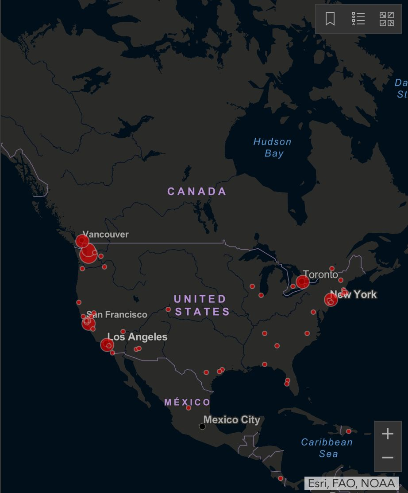
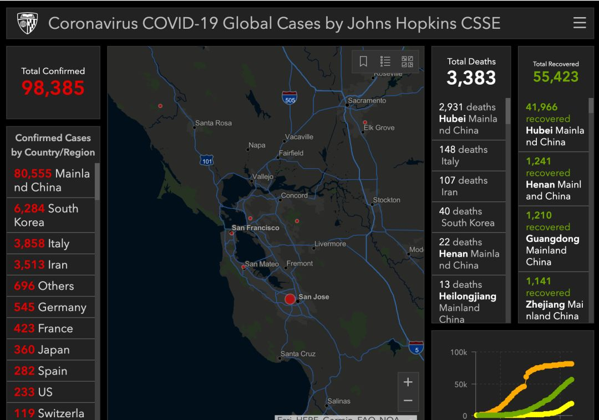
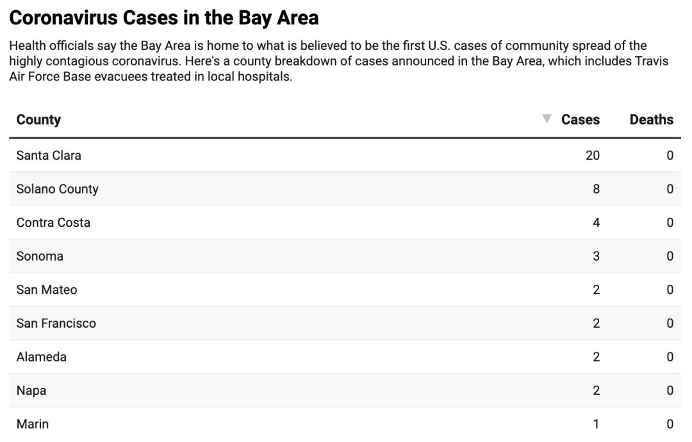
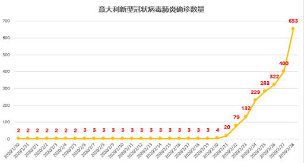
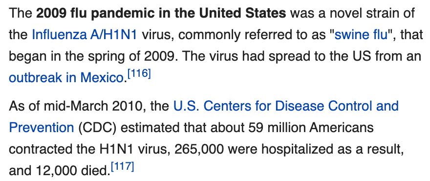
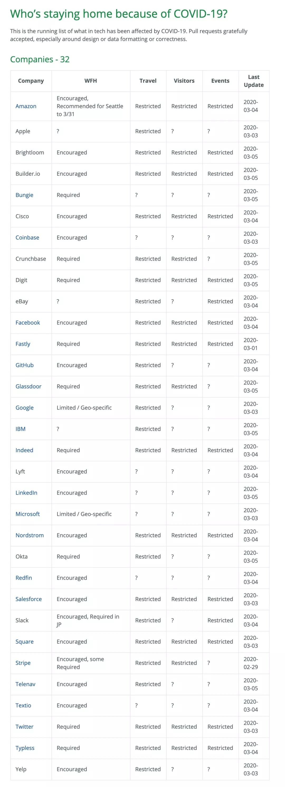

--------点击蓝字关注我--------
微信号：gaoxiaomao88
最近一周美国的新冠肺炎疫情开始蔓延。截止2020-03-05的数据，美国已经有234例确诊。加州有53例确诊，其中湾区有24例，20例在Santa Clara，2例在San Mateo, 2例在旧金山。在这些确诊的病例中，有好多例都没有无法溯源（比如今天报爆出来的旧金山的两例），因此很有可能还有一些的感染者没有被发现和隔离。



那么美国人对此是什么态度呢？
我觉得大部分人的态度跟Trump的态度还真的差不多，觉得就是一场严重点的流感。
我今天跟我的老板聊天的时候提起新冠病毒的事情，说我觉得这个virus感觉很可怕，以现在美国这种不控制的趋势，感觉肯定要爆发了。我老板表示他早就觉得这个病毒爆发是迟早的事情，不过致死率感觉也就2%，没什么大不了了。
虽然我跟他强调说这个2%是大量医疗资源堆出来的结果，如果医疗资源不充足的话，就会像武汉那样，致死率在4-5%以上，但是感觉他是有点不相信的。
大部分的美国人也不喜欢戴口罩，因为在他们的认识里面，只有生了重病的人才会戴口罩。目前尽管旧金山已经爆发了疫情，在大街上大家还是照样出行，该挤地铁挤地铁，该集会就集会。除了偶尔零星的几个华人戴口罩（即使是华人，戴口罩的也不多），绝大部分的人是不戴口罩的。
大家不仅不戴口罩，对于戴口罩的人还有一些鄙视和厌恶。
今天在公司里会前闲扯的时候，就有同事说到他今天看到公交车上坐了四个戴口罩的人，吓得他连车都没上，果断等下一班车。大部分美国人的这种认识，给戴口罩的人带来了很多无形的压力。昨天我去Costco采购囤货的时候，也碰到了这种情况。
在超市里会发现几乎没有人戴口罩，而且大部分人看到你戴口罩都会有点紧张，甚至有些人有些躲闪。我们甚至还碰到一个华人大妈用中文跟我们说，这边这么空旷，就不要戴着口罩出来吓人啦。。。只能表示不用她管。
幸好加州这边白左文化比较厉害，大家就算心里对你不满意，也不太能公开说出来，因为毕竟戴不戴口罩是你个人的自由。这种对弱势文化的包容，在这种时候还是蛮受用的。
既然大家对于疫情是这样的不设防的姿态，那疫情的蔓延速度应该就可以参照别的类似态度的国家了。鉴于目前疫情最严重的西方国家是意大利，姑且用他们的数据来做一下对照。
意大利是从2-22号开始有20例的确诊的，然后2-23号有132例，2-24号有230例，2-25号有283例，2-26号有374例 。。。3-05有3000+例。

美国2-25 ~ 3-1号这段时间一直有50-100例，其中半数以上都是撤侨的人。从3-2号有107例，3-3号有130例，3-4号有162例，3-5号有234例。
之所以3-5号一下子增长这么多，可能是因为政府在3-4出了政策，放宽了测试的人群（之前推荐只测试去过高危地区，且有发热，咳嗽等症状的人，现在则是由医生自行判断）。
鉴于测试人群的放宽，我们可能会看到美国的病例开始以2-3天翻一倍的速度增长一小段时间，说不定再过10天，等到3-15日，病例就会到达3000例了。
不知道到了那个时候，人们会不会更加重视一点这个病毒的事情。我的推测是不会。
在2009年H1N1疫情的时候，美国的CDC也是基本上没有做什么事情。最终全美大约有近六千万的人染上了H1N1。所幸H1N1的致死率并不是很高，大约在0.01% - 0.08%，因此最终全美大约有1万多的人死于H1N1。

那既然因为这个病死1万多人似乎也没啥。。。。那死20万人是不是也没啥呢？或者说就算类似于武汉，医疗资源不太充足，最终死亡率在5%左右，死50万人，说不定在美国也没啥？我真的不太知道。
目前我能看到的是，IT公司可能会有更多的在家办公，但是绝大部分的普通美国人可能还是会照常工作，照样不戴口罩，至多更勤一点洗手。。。。毕竟人的观念是很难改变的。等到再过10天疫情更严重一点的时候，可能物资会开始紧张起来了，美国人说不定也会开始囤货了？我也说不准。不过反正现在口罩早就没了，消毒液，洗手液之类的各大超市也已经卖得差不多了，大家还没备货的抓紧去弄一点吧。
还有一个蛮有意思的是硅谷IT公司推荐在家办公的早晚，下面这个列表是截止3-5日的列表（并不全，比如我知道Pinterest，Twilio等公司也推荐了在家工作）。对于那些迅速做出决策保护员工的公司，我内心是给他们加分了的。
https://stayinghome.club/
